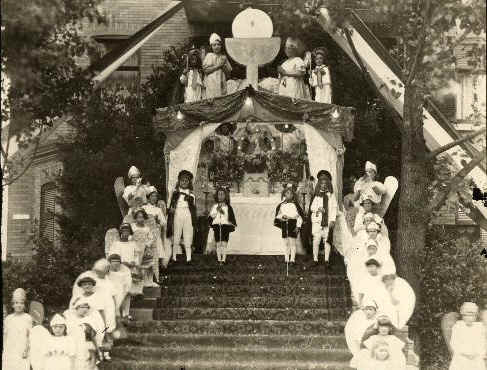

IN THE EARLY 20TH CENTURY, ROSE-ANNE CHARETTE AND HER HUSBAND ALDÉRIC LAVOIE WERE CHOSEN TO TURN THEIR HOUSE INTO A REPOSOIR.
ROSE-ANNE CHARETTE, DAUGHTER OF ALPHONSE CHARETTE SR. AND ROSIANNE MIRON, WAS THUS THE SISTER OF ALPHONSE CHARETTE JR., WHOSE WIFE, MARIE LAVOIE, WAS ALDÉRIC LAVOIE'S SISTER. IN OTHER WORDS, THE CHARETTE BROTHER AND SISTER HAD MARRIED THE LAVOIE SISTER AND BROTHER.
